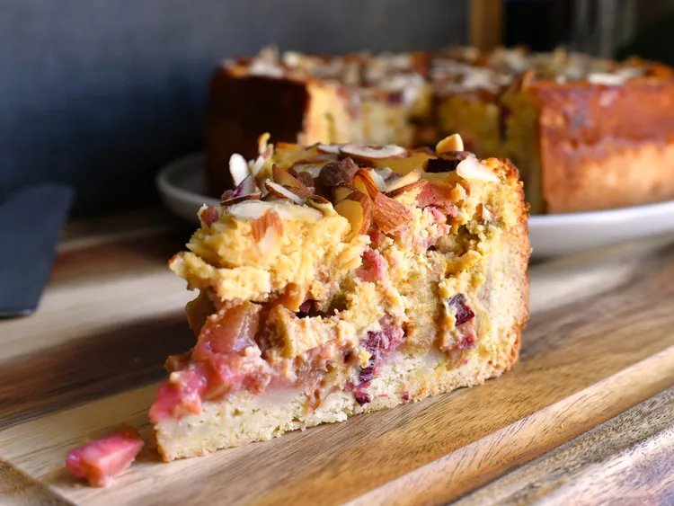

German Rhubarb Almond Cake

The base of the cake is rich and buttery and is topped with chopped rhubarb and a decadent baked almond custard. Perfect with whipped cream or vanilla ice cream.
Ingredients
Rhubarb Filling
- 6 cups peeled and chopped rhubarb
- ¾ cup white sugar
Cake base
- 7 tablespoons unsalted butter, softened
- ⅓ cup white sugar
- 2 cups all-purpose flour
- 2 tablespoons white wine
- 2 teaspoons baking powder
- 1 large egg
Almond Custard
- 1 cup almond flour
- ¾ cup crème fraîche plus 2 tablespoons
- ⅔ cup white sugar
- 2 large eggs
- 2 teaspoons vanilla sugar
- 1 teaspoon ground cinnamon
Instructions
- For the rhubarb filling: Combine rhubarb and sugar in a large bowl. Mix to combine and set aside to allow the rhubarb to release some juice, about 1 hour.
- For the cake: Beat butter and sugar together in a large bowl until light and fluffy. Add flour, wine, baking powder, and egg; mix together to form a dough. Wrap dough in plastic wrap and place in the refrigerator for 5 to 10 minutes.
- Meanwhile, preheat the oven to 350 degrees F (175 degrees C). Grease a 9-inch springform cake pan.
- Roll dough out on a lightly floured surface into a circle slightly larger than the diameter of the cake pan. Transfer to the prepared cake pan, letting the dough come up the sides by about 1 inch.
- Drain rhubarb and evenly scatter over the dough; bake in the preheated oven for 45 minutes.
- Meanwhile, make the custard filling: beat almond flour, 3/4 cup plus 2 tablespoons crème fraîche, sugar, eggs, vanilla sugar, and cinnamon together until smooth.
- Remove cake from oven after 45 minutes; top with almond custard mixture and use a spatula to spread it evenly to the sides of the pan. Return cake to the oven and bake until golden brown on top, about 30 minutes more.
- Allow the cake to cool in the pan before slicing.